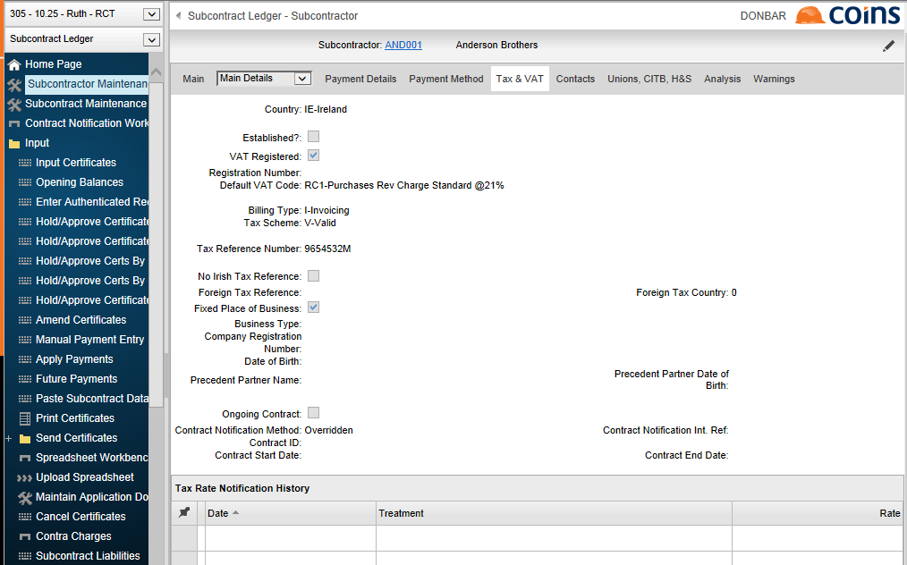

button). This gives the following screen:
button). This gives the following screen:Additional RCT information is available if you click the subcontract account number link in the browse (rather than clicking the button). This gives the following screen:

This includes an
Also note that there is a C2 Tax tab which displays the old C2 card details under the previous RCT scheme for reference.